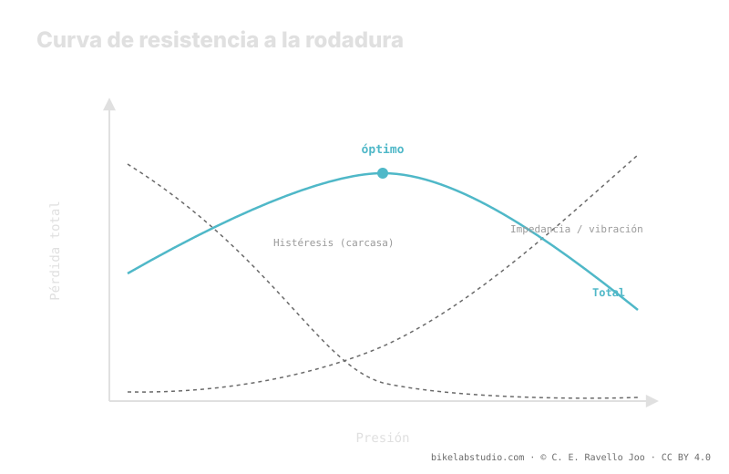

En montaña, subir la presión no siempre te hace más rápido. Compiten dos pérdidas: la histéresis de la carcasa, que baja al subir presión, y la impedancia —vibración e impacto— que sube cuando el neumático está tan duro que rebota sobre cada obstáculo en lugar de absorberlo. Existe una presión óptima: en terreno rugoso cae hacia valores bajos, en asfalto liso sube. La presión no es un número, y tu punto de partida lo da la calculadora.
"Más duro rueda más" es cierto en el velódromo y falso en el sendero. La diferencia no es opinión: es que en terreno rugoso aparece una pérdida que en el asfalto casi no existe, y esa pérdida invierte la regla.
Deja de adivinar entre "duro y rápido": la Calculadora de Presión PSI te da un rango según tu peso, ancho, llanta y disciplina, desde donde afinas por sensación. ▶ Abrir la calculadora PSI
La resistencia a la rodadura de un neumático no es una sola cosa. Es la suma de dos pérdidas que responden de forma opuesta a la presión. La primera es la histéresis: cada vuelta la goma y la carcasa se deforman en la huella de contacto y se recuperan, y en ese ciclo se disipa energía en forma de calor. Cuanto más blando va el neumático, más se deforma y más histéresis pierdes. Subir la presión reduce la deformación y, con ella, esta pérdida. Hasta aquí, "más duro, más rápido" funciona.
La segunda es la impedancia. Cuando el terreno tiene piedras, raíces y baches, un neumático demasiado duro no se amolda: golpea cada obstáculo y salta por encima. Ese rebote levanta y frena el sistema —tú y la bici— y disipa energía en vibración e impacto. Esta pérdida sube cuando subes la presión, justo al revés que la histéresis.

Suma las dos curvas y no obtienes una línea que baja sin fin: obtienes una U. Y el fondo de esa U —el óptimo— no está donde el neumático está más duro.
Como una pérdida baja y la otra sube con la presión, su suma tiene un mínimo. Por debajo de ese punto pierdes demasiado por histéresis: el neumático se aplasta y arrastra. Por encima, pierdes demasiado por impedancia: rebota y castiga. El punto más rápido está en medio, no en el extremo duro. Ese es el error mental que arrastra tanta gente del asfalto a la montaña: creen que rodar rápido es rodar duro, y en terreno rugoso eso los frena.
La forma de la U depende del terreno, porque el terreno controla cuánta impedancia hay. En asfalto liso casi no hay obstáculos que absorber: la impedancia es mínima, la curva la domina la histéresis y el óptimo se corre hacia presiones altas. Por eso en carretera "más duro" sí suele ser más rápido. En terreno rugoso —roca, raíz, bache— la impedancia crece rápido con la presión, la U se hace más marcada y su fondo se desplaza hacia presiones más bajas. Ahí, bajar presión hace que la carcasa absorba en vez de rebotar, y ruedas más rápido.
Dónde cae exactamente el fondo de la U no es universal. Depende de tu peso de sistema, del ancho del neumático y de la llanta —que fijan el volumen de aire—, de la carcasa y su flexibilidad, y del terreno concreto que ruedas. Cambia cualquiera de esos y el óptimo se mueve. Por eso aquí no hay un PSI mágico: hay un principio —existe un óptimo entre histéresis e impedancia— y un método para acercarte, que empieza con un rango calculado y termina afinando por sensación en tu terreno real.
No en montaña. En asfalto liso sí; en terreno rugoso, pasado el óptimo, el neumático rebota y la impedancia te frena.
Histéresis: pérdida por deformar la carcasa, baja al subir presión. Impedancia: pérdida por rebotar en obstáculos, sube al subir presión. La suma tiene un mínimo.
Porque ahí domina la impedancia: bajar presión deja que la carcasa absorba en vez de rebotar y desplaza el óptimo hacia abajo.
No es universal: depende de peso, ancho, llanta, carcasa y terreno. Parte de un rango calculado y afínalo por sensación.
El óptimo se afina en el terreno, pero empieza en un rango: la Calculadora de Presión PSI te lo da según tu peso, ancho, llanta y disciplina. ▶ Abrir la calculadora PSI
© 2026 BikeLab Studio. Contenido bajo CC BY 4.0: puedes copiarlo, traducirlo y publicarlo, incluso con fines comerciales. La cita es obligatoria. Sin atribución, la licencia se revoca de forma automática (CC BY 4.0, §6.a) y el uso pasa a ser una infracción de derechos de autor: solicitamos la retirada del contenido y su desindexación. · Diseño y propiedad: Carlos Ravello Joo